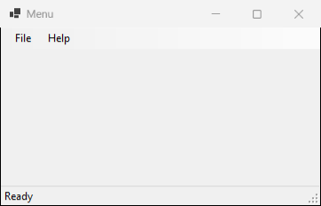
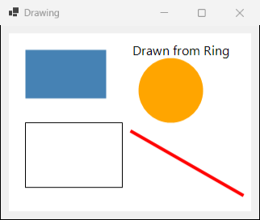

Windows Forms
Build desktop programs with every Windows Forms control, plus a few short helpers that keep small programs small.
The shape of a program#
load "dotnet.ring"
using { # the names start the Windows Desktop runtime and make the Ring thread an STA thread
"System.Drawing"
"System.Windows.Forms" # also loads the GUI helpers
}
oForm = "" # globals used by event code
oCount = ""
nClicks = 0
func main
oForm = uiForm("Click counter",260,130)
oCount = uiLabel(oForm,"0 clicks",20,15,220,24)
uiButton(oForm,"Click me",20,50,100,32,"clicked()")
uiRun(oForm)
func clicked
nClicks++
oCount.Text = "" + nClicks + " clicks"
The using block first (it starts the desktop runtime because it names System.Windows.Forms and System.Drawing), then the form. uiRun(oForm) shows the form and runs the message loop (Application.Run). When the form closes the program continues after uiRun.
Programs that start with main() at the top of the file can put the main code before the functions. Define functions after the main code: in Ring a func at the top would swallow the rest of the file.
The helpers#
Everything the helpers do can also be written with the plain classes (see the next section); they exist to keep small programs short. They are loaded together with System.Windows.Forms.
| Helper | What it creates |
|---|---|
uiForm(title, w, h) | a form with a client area of w × h, centered |
uiLabel(parent, text, x, y, w, h) | a label |
uiButton(parent, text, x, y, w, h, clickCode) | a button; clickCode is Ring code or a function call |
uiTextBox(parent, x, y, w, h) | a text box |
uiMemo(parent, x, y, w, h) | a multi-line text box with scroll bars |
uiCheckBox(parent, text, x, y, w, h, clickCode) | a check box |
uiListBox(parent, x, y, w, h) | a list box |
uiComboBox(parent, x, y, w, aItems) | a combo box filled from a Ring list |
uiPanel(parent, x, y, w, h) | a panel |
uiPictureBox(parent, x, y, w, h) | a picture box |
uiTimer(milliseconds, code) | a timer (.Start(), .Stop()) |
uiMenu(form, menus) | a menu bar from a Ring list |
uiRGB(r,g,b), uiColor("Red"), uiFont(name,size,bold) | colors and fonts |
uiMessage(text,title), uiAsk(text,title) | message box, yes/no question |
uiOpenFileName(title,filter), uiSaveFileName(title,filter) | file dialogs (file name or "") |
uiNumber(value) | a number as text without trailing fixed decimals |
Menus#
uiMenu(oForm,[
["File",[["New","say('New file')"],["Open","say('Open file')"],["-",""],["Exit","oForm.Close()"]]],
["Help",[["About","say('About this program')"]]]
])
Drawing with UiCanvas#
UiCanvas draws on a bitmap shown by a picture box. A color is a name ("Red"), "#RRGGBB" or a .NET Color.
oPicture = uiPictureBox(oForm,10,10,300,220)
oCanvas = new UiCanvas(oPicture)
oCanvas.clear("White")
oCanvas.fillRect(20,20,100,60,"SteelBlue")
oCanvas.fillCircle(200,70,40,"Orange")
oCanvas.drawRect(20,110,120,80,"Black")
oCanvas.line(150,120,290,200,"Red",4)
oCanvas.text("Drawn from Ring",150,10,"Black",12)
oCanvas.show() # refresh the picture box
| Method | Does |
|---|---|
clear(color) | fill the whole bitmap |
fillRect(x,y,w,h,color), drawRect(...) | rectangles |
fillCircle(x,y,r,color), drawCircle(...) | circles around the center |
fillEllipse(x,y,w,h,color) | ellipse |
line(x1,y1,x2,y2,color,width) | line |
text(text,x,y,color,size) | text |
show() | refresh the picture box |
pixel(x,y) | the color of a pixel as a hex text (for tests) |
brush(color), pen(color,width), color(x) | the .NET objects, for anything the helpers don't cover |
Every control is available#
The helpers are optional. The whole of System.Windows.Forms (414 classes), System.Drawing and its sub-namespaces are wrapped, so you can use any control directly:
oTree = new TreeView()
oTree.Dock = "Fill"
oRoot = oTree.Nodes.Add("Fruit")
oRoot {
Nodes.Add("Apple")
Nodes.Add("Pear")
}
oTree.ExpandAll()
oForm.Controls.Add(oTree)| Group | Controls |
|---|---|
| Text and input | Label, TextBox, RichTextBox, MaskedTextBox, NumericUpDown, DateTimePicker, MonthCalendar |
| Buttons and choices | Button, CheckBox, RadioButton, ComboBox, ListBox, CheckedListBox, TrackBar, ProgressBar |
| Lists and trees | ListView, TreeView, DataGridView |
| Containers and layout | Panel, GroupBox, TabControl, SplitContainer, FlowLayoutPanel, TableLayoutPanel; Anchor and Dock |
| Menus and bars | MenuStrip, ContextMenuStrip, ToolStrip, StatusStrip, ToolTip |
| Dialogs | OpenFileDialog, SaveFileDialog, ColorDialog, FontDialog, FolderBrowserDialog, MessageBox, your own modal Form |
| Graphics | PictureBox, Bitmap, Graphics, Pen, Brush, Font |
| System | Clipboard, Timer, Screen, Cursor, Application |
See the 32 samples — one idea each, with a screenshot and the source.
Events#
oButton.setClickEvent("clicked()")
oText.setTextChangedEvent("textChanged()")
oForm.setFormClosingEvent("closing()")
oPicture.setMouseDownEvent("? aDotNetArgs[2].X")The code of an event runs on the Ring thread when the message loop dispatches it. Details and warnings: Callbacks & events.
Keyboard in games#
A button (or any control that takes the focus) steals the arrow keys, Space and Enter from the form, so the form's KeyDown never sees them. uiGameKeys fixes that:
oForm.setKeyDownEvent("keyPressed(aDotNetArgs[2].KeyCode)")
uiGameKeys(oForm,"keyPressed(aDotNetArgs[2].KeyCode)") # after the controls were addedEvery control then reports the arrows as normal keys and the form handles them. Tetris, 2048, Sokoban, Snake and Pong use it.

Self-testing programs#
Every sample and application can drive itself and check its results — the same program, no separate test harness:
uiTest(oForm,"selfTest()") # when started with --selftest: run selfTest() once the form is shown
uiRun(oForm)
uiEnd() # prints SELFTEST OK, or the failures
func selfTest
oForm.Controls.Item(1).PerformClick()
dnAssert("one click",oCount.Text,"1 clicks")uiSendKeys(oForm,"12{+}30{ENTER}") types into the focused control through the real key processing by posting window messages to your own form — it can never type into another program. See Testing.
More#
- Forms samples — 32 short samples.
- Applications — 43 complete programs.
- WPF — the other desktop UI framework.